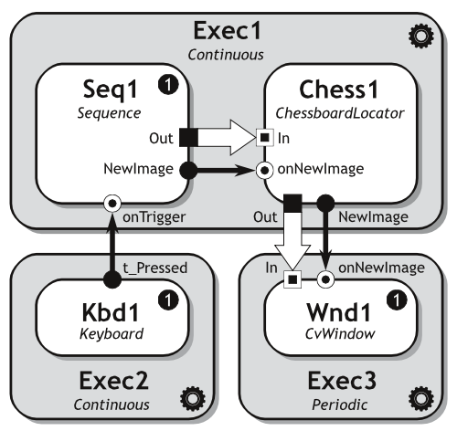

Tutorial objectives
The goal of this tutorial is to create a task responsible for chessboard localization.
- Note:
- The chessboard is utilized as a calibration pattern due to its clear structure.
Task structure
The task should consist of four components - three existing and a one new, implemented during this tutorial.

- Note:
- For more details regarding the structure please click here.
The ChessboardLocator component
The Chess1 component has two major functions:
- localization of chessboard in the input image received through the In data stream,
- painting it on the output image and sending it through the Out data stream.
Those operations should be implemented in the body of the onNewImage() event handler. The handler should also emit an event related to the fact that a chessboard was localized.
Hints
- Select one of the two available calibration datasets.
- Create task file on the base of the ImageBlurer.xml file.
- Use the OpenCV findChessboardCorners() for chessboard localization.
- Utilize the drawChessboardCorners() for drawing of chessboard corners on output image.
Result
In result a calibration a sequence of images will be displayed - with located corners on every image containing chessboard.
Related sections
- See also:
- OpenCV reference manual regarding the calibration problem.
-
A movie presenting the OpenCV-based chessboard localization.
-
Components - definition, types, states : Description of components


{kind=link}